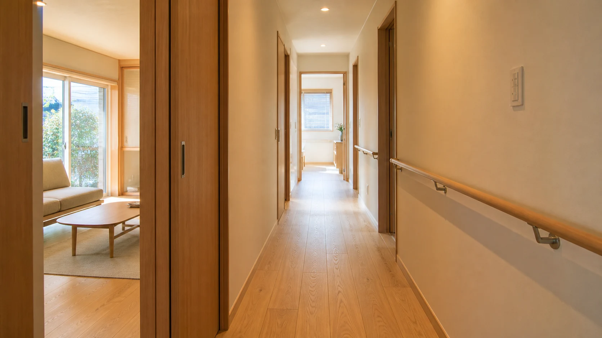
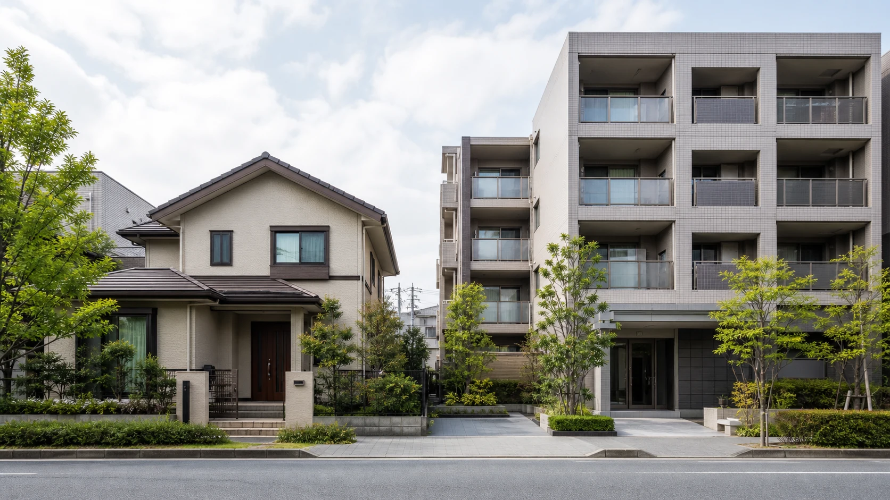
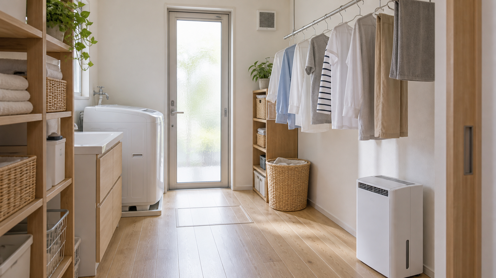
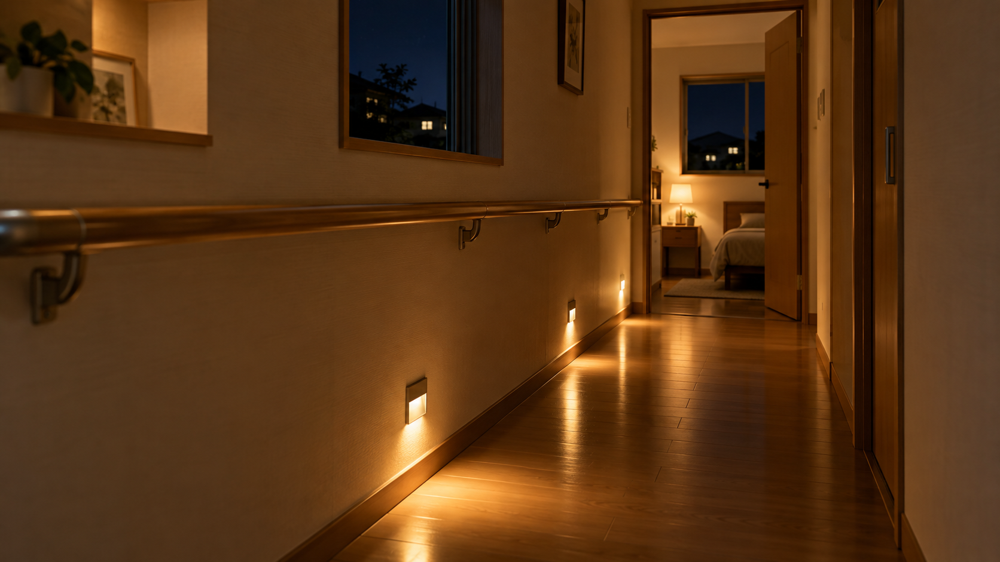

COLUMN SERIES
暮らしのアドバイザー特別編集
ちょっと深い住まいの話
住まいの価値、家族の関係、これからの暮らし。既存の家をどう整え、使い続け、引き継ぐかを考えるコラムです。
 この連載を書いた人｜エイスケ
この連載を書いた人｜エイスケ第21〜30回の記事一覧
ご確認用の10記事です。内容・表現・画像の確認をお願いします。
10件を表示
住宅資材の値上がりが心配｜関税の影響と、優先して検討したいリフォーム
関税のニュースと自宅の見積額を分けて考え、家の状態から工事の優先順位を整理。価格変動に備える見積もりの確認点を紹介します。

家の劣化を放置したくない人へ｜寿命を延ばす点検場所と時期
屋根・外壁・窓・給湯・換気・排水の変化を、安全に確認して記録する方法。住む人と専門家の役割を分けて紹介します。

家の中で転ばないために｜60歳から見直す手すり・段差・動線
手すり、段差、床の物、照明を一続きの動作から見直す。本人の希望と体の状態に合わせた住まいの整え方を紹介します。

土地を持て余している人へ｜売却・駐車場・賃貸を「収益・リスク・手間」で比較
売却・駐車場・賃貸住宅を収益、リスク、管理の手間、やめるときの条件で比較。土地を持つ目的から選択肢を整理します。

定年後、夫婦の距離が近すぎてつらい｜書斎・別室・共用空間のつくり方
定年後の在宅時間の重なりを、音・視線・動線から考える。双方の居場所と共有空間を、今の家で使い直す方法を紹介します。
20代で家を買って後悔しないために｜住宅取得を判断する5つの条件
20代の住宅取得を、地域、家計、変化への対応、建物、本人の納得という五つの条件で検討。賃貸も含めて判断材料を整理します。

室内干しが乾かない・におう｜換気・湿気・洗濯動線の整え方
風、換気、除湿の役割と、洗ってからしまうまでの動線を整理。今の家で室内干しの負担を減らす確認点を紹介します。

夜の廊下・階段でつまずく前に｜足元灯とスイッチ配置の見直し方
夜の動線を、歩く前・途中・戻るときに分けて確認。足元灯、人感センサー、スイッチと停電時の備えを整理します。

修繕履歴や設備情報がわからない｜家の取扱説明書に残す5項目
家の基本情報、設備、工事履歴、使い方、相談先を五項目で整理。家族へ引き継ぐ記録と個人情報の扱いを紹介します。
スマートホームが使いにくい・不安｜見守り・停電・プライバシーで選ぶ自動化
家の自動化を、使う人の希望、見守り情報、停電・通信断、更新と終了時の手続きから考える。小さく始める選び方を紹介します。
該当する記事がありません。検索語を変えてください。
本ページは公開前のご確認用です。記事の公開日・本番反映は、ご確認後に別途調整します。